ovid · WLR · How-to guide
How-to guide
One task per section: when to use it, the steps, what changes and how to check it. Page names are those in the rail on the left (1 Bring in, 2 Organize, 3 Correct, 4 Report and More); an orange number in a step points to the same marker in its figure. For a first project, start with the WLR quick start; for what WLR does to the data and why, see the WLR reference guide.
The three views
The same project, data and edits in three views, switched at the top (Simple, Standard, Workbench) or with ?ui=simple, ?ui=standard or ?ui=workbench in the address. A new install opens in Simple.
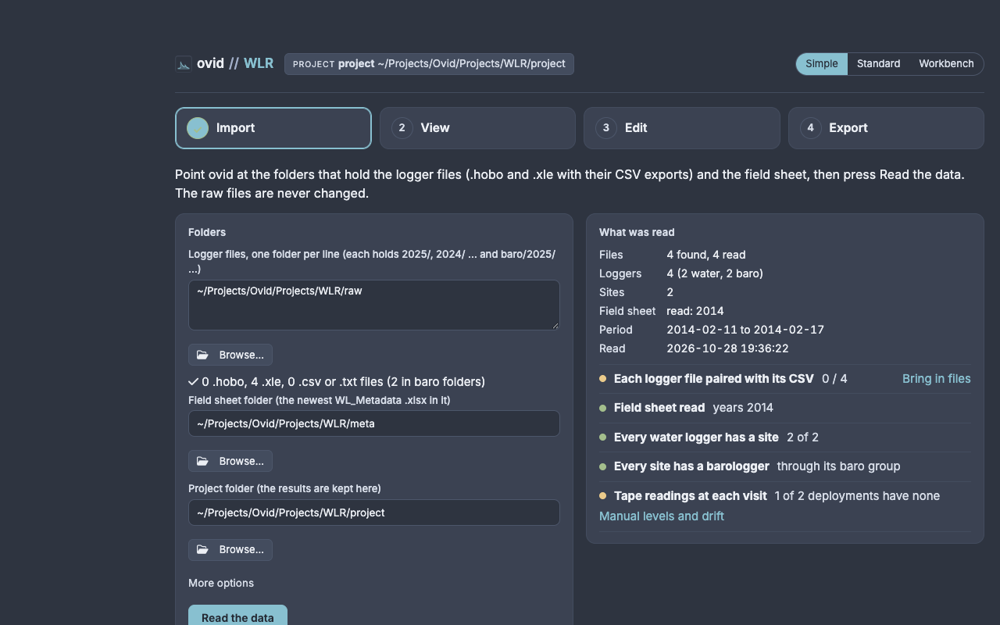
- Simple: a field check in four steps (Import, View, Edit, Export). Edit renames sites, places them, sets their land cover and moves loggers between them; it changes no data value.
- Standard: the set-up flow these tasks use: bring in files, organize loggers and sites, correct, report.
- Workbench: every change to the data by hand. Removals, out-of-water periods, quality rules, clock corrections, barologger checks and corrections over a period are edited here; Standard shows those tables and points to the Workbench.
1Add a new download
when After a field visit, with new .hobo or .xle files.
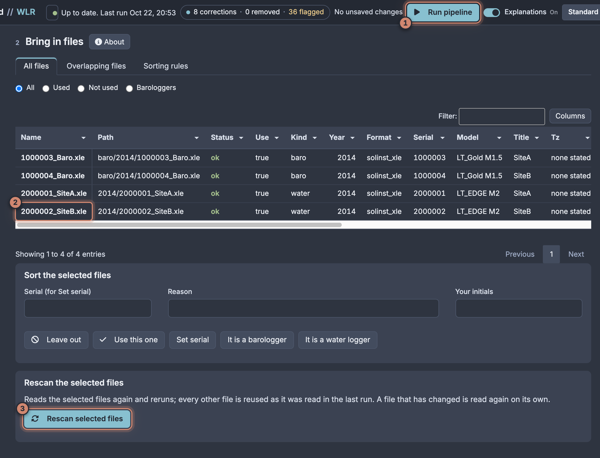
- Copy the files into the year folder of a data folder (
2025/, orbaro/2025/for barologgers). U20 and U20L .hobo files are read as they are; for other HOBO models, export the CSV from HOBOware beside the .hobo. - Press Run pipeline 1.
result Only loggers whose files or set-up changed are read and drawn again; the rest are reused from the last run. A logger's downloads from several years are joined into one record, then split into deployments.
check 2 Bring in files lists each file with its status. To read some files again without a full run, select them 2 and press Rescan selected files 3.
2Leave out a file or say what logger it is
when A file is a bad copy, has the wrong serial in it, or is a barologger outside a baro/ folder (or the reverse).
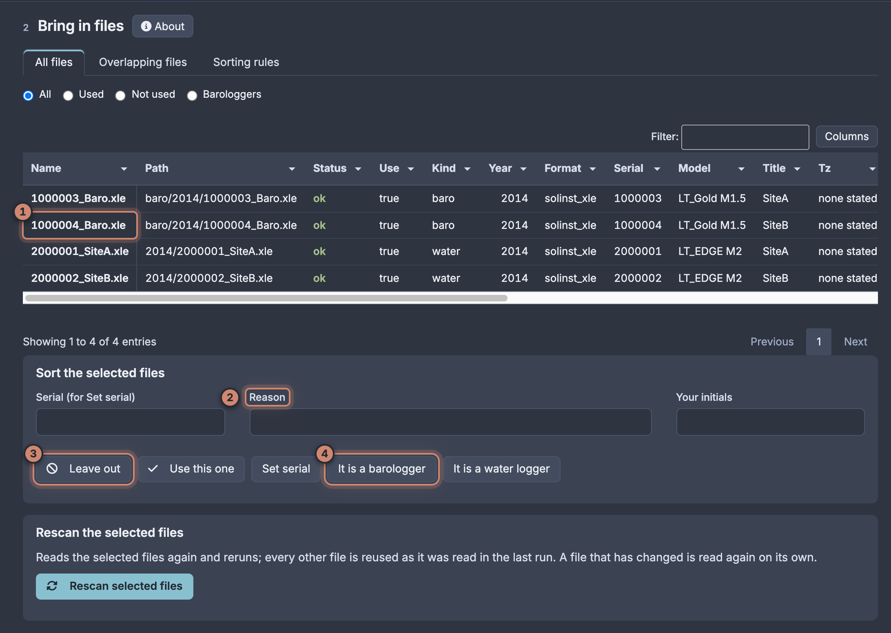
- 2 Bring in files: select the file 1.
- Give a Reason and your initials 2.
- Press Leave out 3, Set serial (with the serial typed beside it), or It is a barologger / It is a water logger 4.
- Press Run pipeline.
result A sorting rule is added to the set-up tables and applied on every run. The raw file is not changed.
check The file's Use and Kind columns show the change, and the Audit trail gives the reason.
3Give a logger a site, dates or a hang length
when A logger has no site ("Unlisted" in the outputs), was moved, or the workbook is missing.
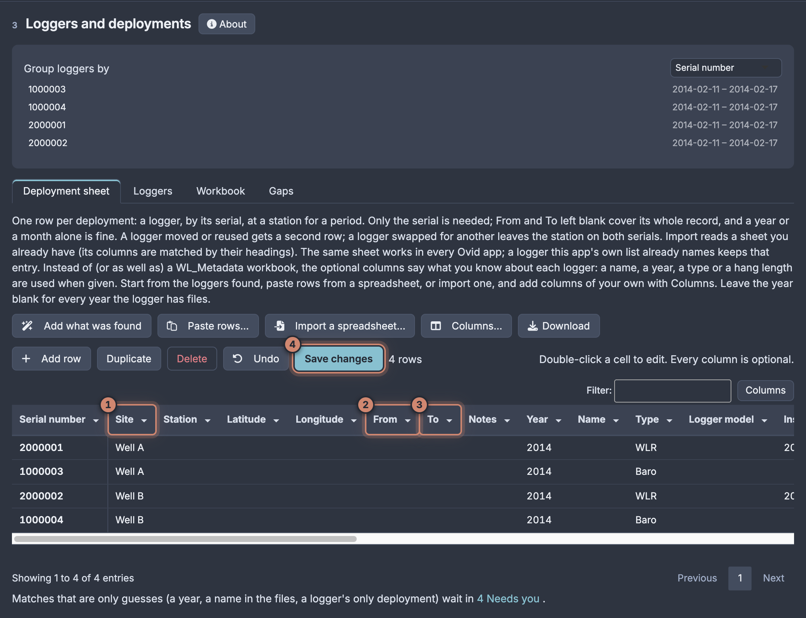
- 3 Loggers and deployments: double-click a cell of the logger's row to edit it. Site 1 is the one column most rows need.
- From 2 and To 3 limit the row to a period; blank covers the logger's whole record, and a year or a month alone is fine. A logger moved to another site gets a second row.
- Hang length (cm), the T-coupler and casing columns and the others (scroll right) are used when given.
- Save changes 4, then Run pipeline.
result The logger's records go to that site for that period. What you type here wins over the workbook, which wins over what the files say.
check Deployment history lists every deployment with its start, end and where each came from.
4Accept suggestions and decide what the run found
when After a run, when Data check in the side panel shows something to look at.
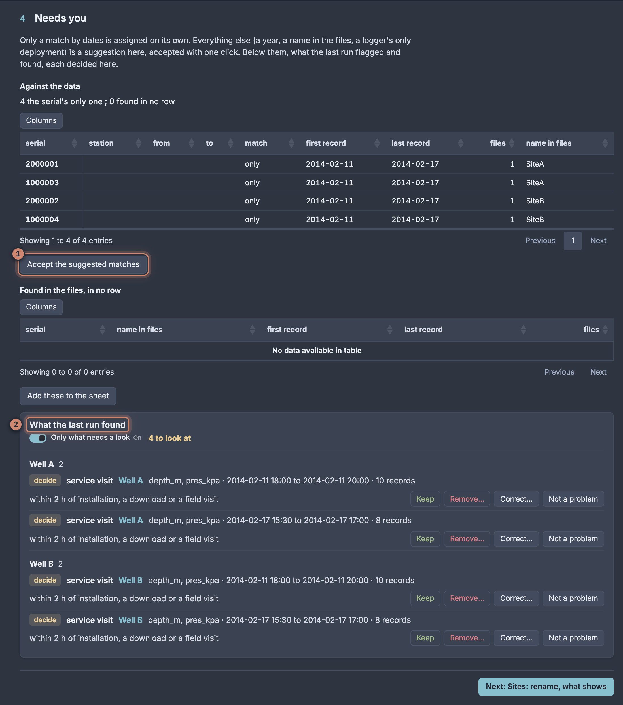
- 4 Needs you: Accept the suggested matches 1 of loggers to rows, made from a year, a name in the files or a logger's only deployment.
- Under What the last run found 2, decide each line: Keep, Remove…, Correct… or Not a problem, or follow its link to the page that fixes it.
- Each decision is saved as you make it (Not a problem asks why); the next run uses it.
result A kept flag stays in the data as a flag. A removal or correction becomes a row in Corrections over a period, noted "Needs you".
check The item leaves the list. Turn Only what needs a look off to see decided items with their decision.
5Rename a site or hide it
when A site was named wrongly, or a site should stay out of the overview pages.
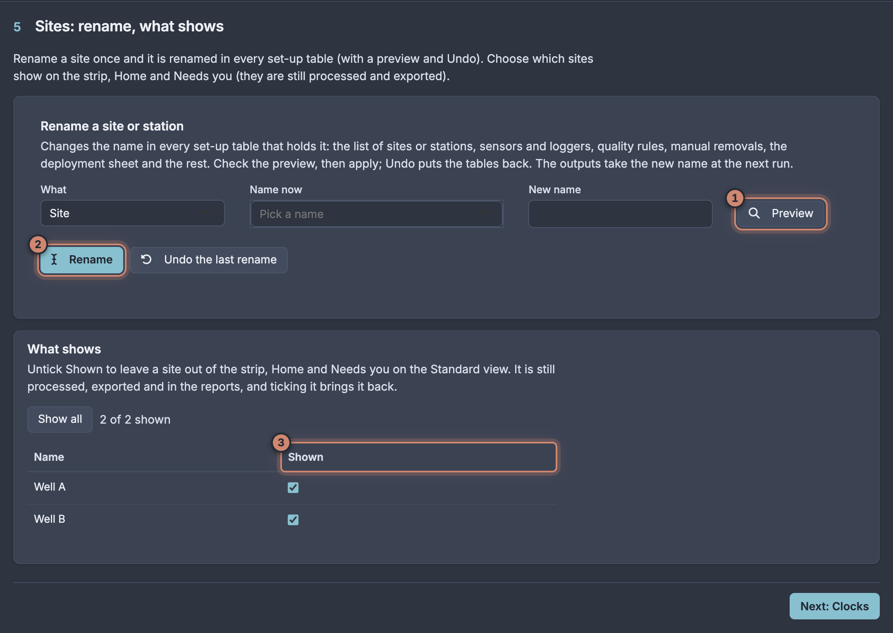
- 5 Sites: rename, what shows: pick the site, type the new name and press Preview 1, then Rename 2. Every set-up table that holds the name is changed; Undo the last rename puts them back.
- Untick Shown 3 to leave a site out of the site strip, Overview and Needs you. It is still processed, exported and in the reports.
result The outputs take the new name at the next run.
6Correct the workbook for one deployment
when The WL_Metadata workbook has a wrong hang length, date or site for one logger, and the workbook itself should stay as it is.
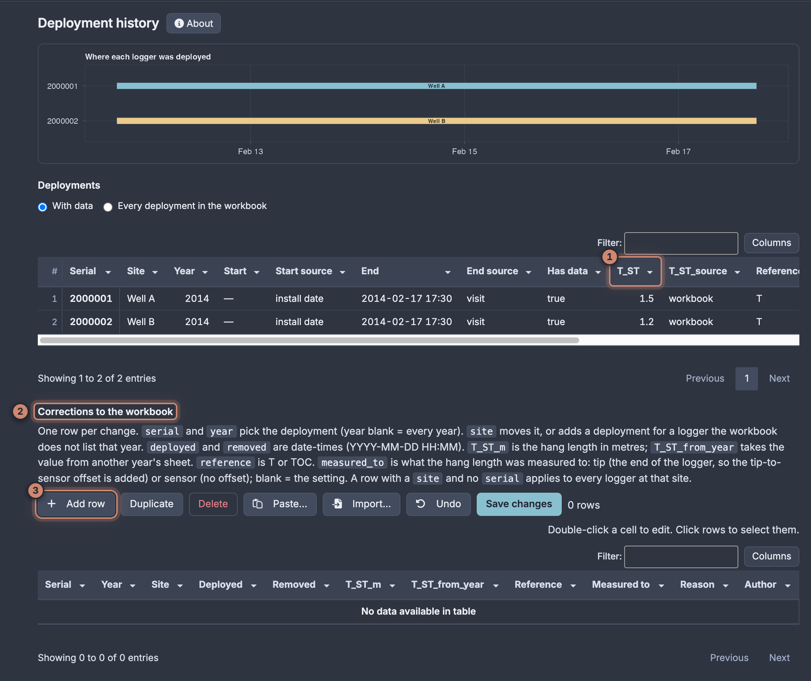
- Deployment history: check the deployment's T_ST 1, its start and end, and where each value came from.
- Under Corrections to the workbook 2, Add row 3: serial and year pick the deployment; fill in only what is wrong (site, deployed, removed, the hang length
T_ST_min metres, orT_ST_from_yearto take another year's value), with a reason and your initials. - Save changes, then Run pipeline.
result The correction wins over the workbook for that deployment; the workbook is not changed.
check Set-up check (More) lists every deployment's hang length and its source.
7Set the time zone of files that state none
when Some files that state no time zone (Solinst files, or CSVs exported without one) were logged in a different zone from the one given at the first run.
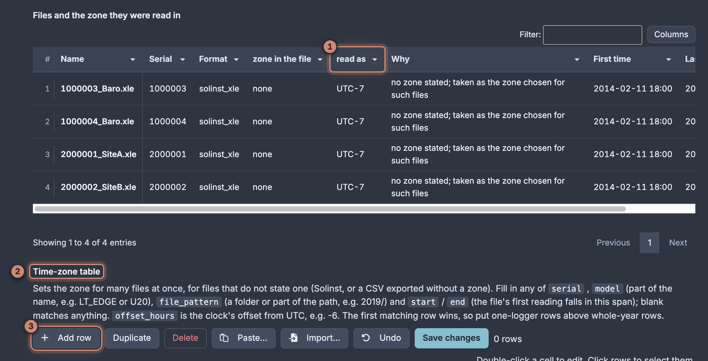
- Clocks: read as 1 shows the zone each file was read in, and why.
- In the Time-zone table 2, Add row 3 and fill in any of serial, model, file pattern (a folder such as
2019/), and start and end;offset_hoursis the clock's offset from UTC, e.g. −6. - Save changes, then Run pipeline. The first matching row wins, so put one-logger rows above whole-year rows.
result Those files are read in their own zone, then moved to the project's time zone (Settings) like every other record.
check The read as column shows the new zone, and the site plot has no whole-hour step at the download.
8Fix a logger clock
when A logger's clock was wrong by a known amount, or drifted and was found out at download.
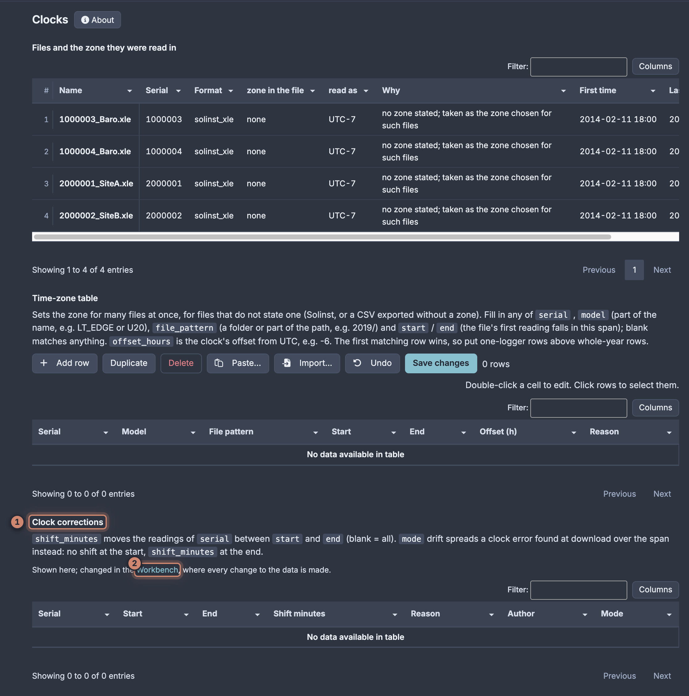
- On Clocks, Clock corrections 1 is shown, not edited: clock corrections change data values, so they are edited by hand in the Workbench (2, or the switch at the top right). There, open the Clock corrections table and press Add row.
- Fill in the serial, the start and end (blank = all of its record) and
shift_minutes. Withmodeset to drift, the shift grows from none at the start toshift_minutesat the end. - Save changes, then Run.
result The readings are moved in time; each shifted record is in the audit trail.
check On the site plot, events and field visits line up with the logger's record again.
9Choose the barologgers
when A site has more than one barologger near it, a barologger failed, or the suggested one is not the best.
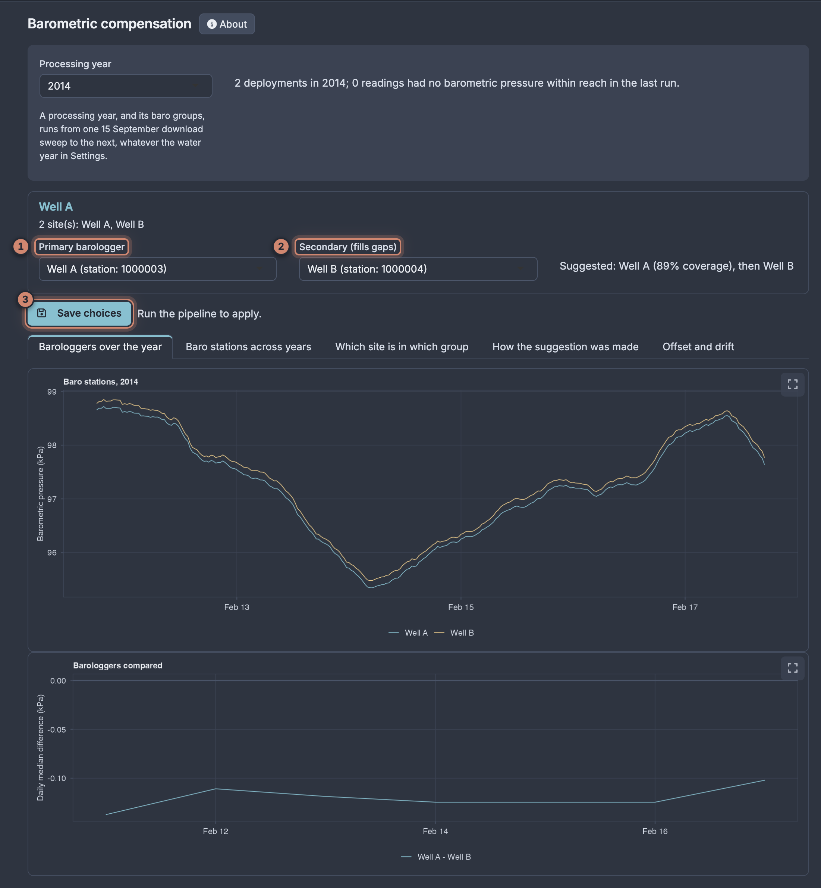
- Barometric compensation: pick the Processing year, then for each group the Primary barologger 1 and a Secondary 2 that fills its gaps.
- Save choices 3, then Run pipeline.
result Every water reading is compensated with the primary's air pressure at its time, or the secondary's where the primary has none; a fill-in from another barologger is shifted onto the primary's level and flagged.
check Barologgers over the year plots each candidate; Offset and drift shows how far they differ.
10Enter a logger offset or a survey point
when Hang lengths are measured to the logger's tip, or a site has a surveyed reference point, so depths can become water elevations.
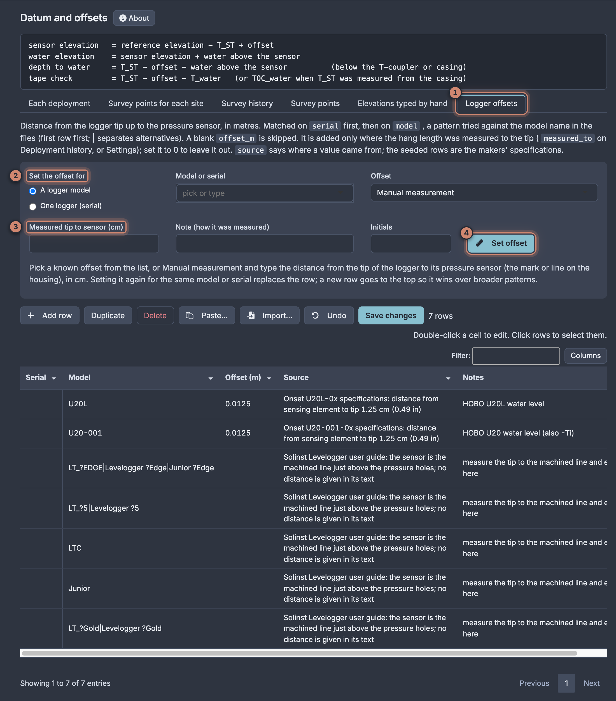
- Datum and offsets: the formulas at the top show how each value is made from the hang length (T_ST), the offset and the reference elevation.
- Logger offsets 1: Set the offset for a logger model or one logger 2, pick a known offset or Manual measurement and type the tip-to-sensor distance in cm 3, then Set offset 4.
- For elevations: Survey points for each site links a site to a dGPS point (code T, TOC or GS); Elevations typed by hand takes a reference elevation surveyed another way. Record the vertical datum and geoid model with every elevation (the table has columns for them): elevations on different datums cannot be compared.
- Press Run pipeline.
result Every deployment with a hang length gets depth to water below its reference point; those with a surveyed reference also get sensor and water elevations.
check Deployment history shows the offset used for each deployment and where it came from.
11Enter tape checks and check drift
when After each field visit with a tape reading of the water level.
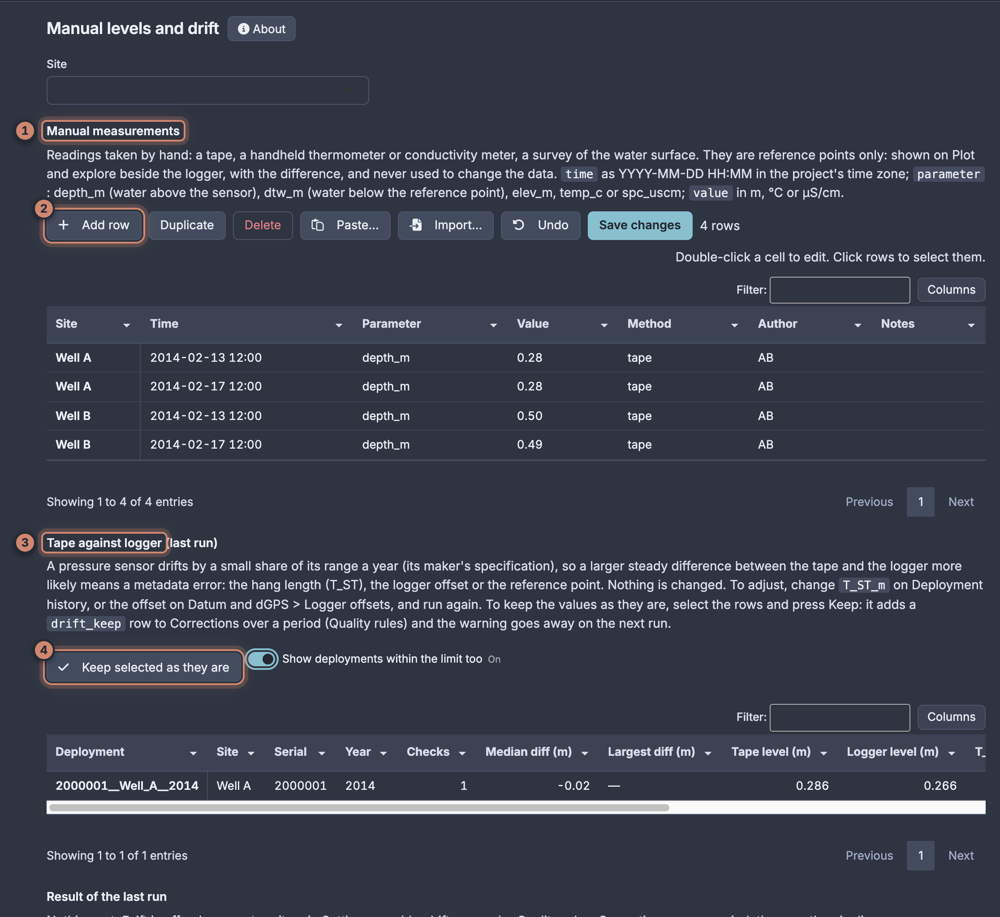
- The tape reading at each download goes with the deployment: T-coupler to water (cm) (or casing to water) in the WL_Metadata workbook or on the deployment sheet (task 3).
- Other readings by hand go on Manual levels and drift: under Manual measurements 1, Add row 2 with the site, time (YYYY-MM-DD HH:MM in the project's zone), parameter (
depth_mwater above the sensor,dtw_mdepth to water,elev_mwater elevation,temp_corspc_uscm) and value, then Save changes. They show on the plots and on the site's Manual vs logger card, with the difference, and never change the data. - Press Run pipeline. Tape against logger 3 compares each visit's tape with the logger just before the visit.
- A deployment with one check shows its median only. A difference beyond the limit (5 cm unless set in Settings) is more likely a metadata error than sensor drift: fix the hang length (task 6) or the offset (task 10). To keep the values as they are, select the rows and press Keep selected as they are 4.
result The readings by hand show beside the logger with their difference; the data are not changed. Drift correction from the tapes is off by default: switch it on in Settings to export corrected values beside the logger's own.
check After the run, look at the site's Manual vs logger card and the Tape against logger table.
12Remove a stretch of data
when The logger was out of the water, frozen, disturbed during a visit, or still settling after it went into the well. The automatic check flags readings within 2 h of installation, a download or a visit; remove those that are not water level, and anything else the check did not catch.
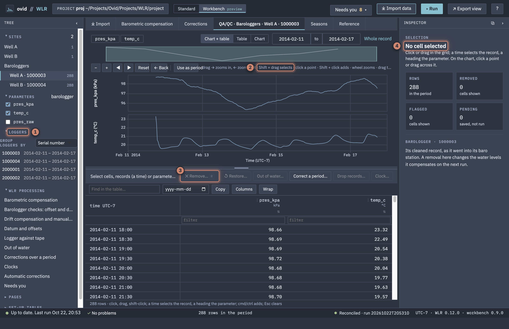
- Switch to Workbench (top right). In the tree, pick the site, deployment or logger 1.
- Shift + drag across the chart 2 to select the stretch; the inspector 4 shows its count, mean, minimum, maximum and how many are already removed or flagged.
- Press Remove… 3 and give a reason and your initials. Out of water…, Correct a period… and Drop records… beside it work the same way.
- Press Run.
result A row is added to Corrections over a period. The old values stay in the audit trail and raw files are never changed. Restore undoes it the same way.
check After the run, the stretch shows as removed on the plot (a faint line keeps the old values) and the Audit trail lists it.
13Change a quality limit
when A limit removes good readings, or lets bad ones through, for your loggers or sites.
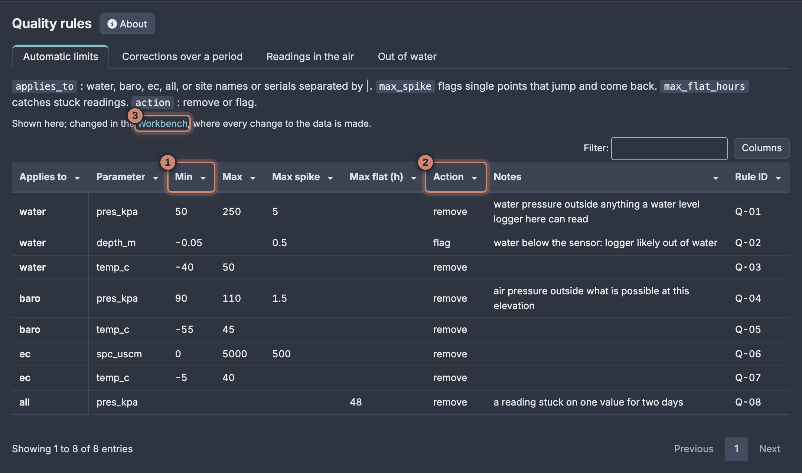
- Quality rules shows the limits; they are edited by hand in the Workbench (3, or the switch at the top right). There, open the Quality rules table and double-click a cell to change it: Min and Max 1, the largest single jump (max spike) or the longest flat stretch (max flat h).
- Action 2: remove or flag. Applies to takes water, baro, ec, all, or site names or serials separated by |.
- Save changes, then Run.
result The rule is applied to every reading it covers; each removal or flag carries the rule's ID.
check The Audit trail lists the rule's ID and how many values it removed or flagged.
note The seeded limits are ovid defaults with no published source (reference guide, section 13); check them against your loggers' specifications. The barometric range, 90 to 110 kPa, fits sites from sea level to about 1,000 m: widen Q-04 for higher sites, or good readings are removed.
14Switch an automatic correction off
when A correction the run makes on its own does not suit the project.
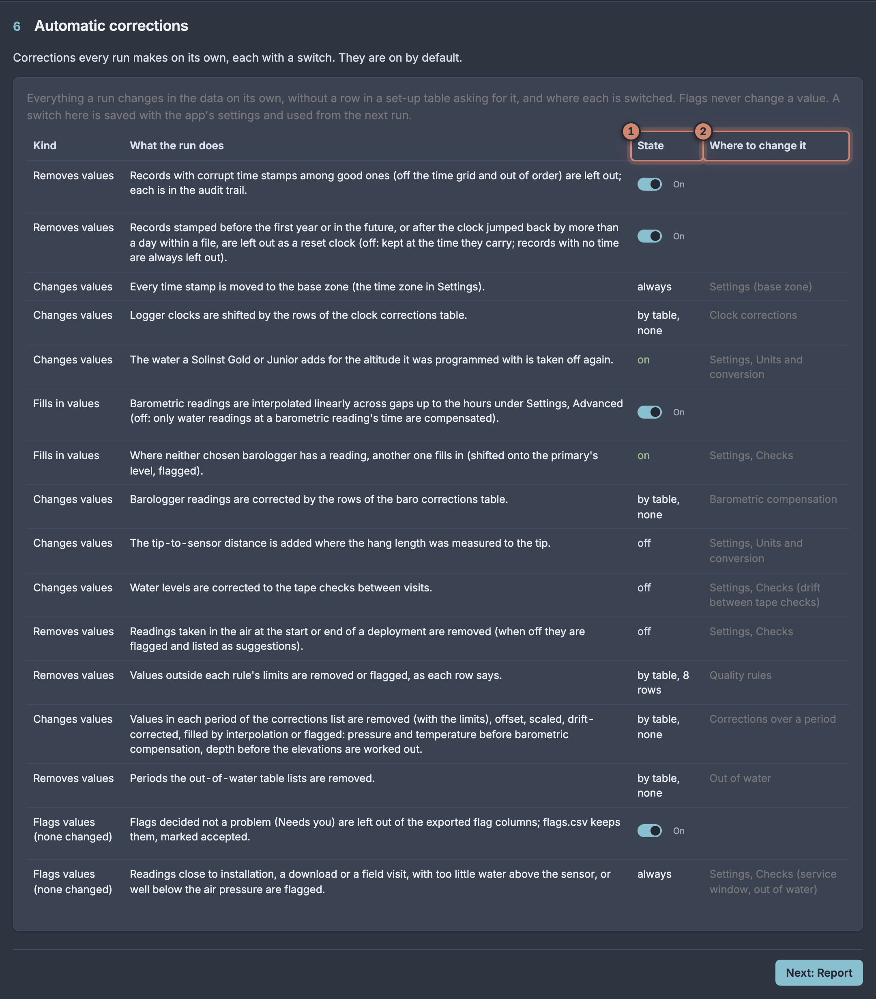
- 6 Automatic corrections lists everything a run changes on its own, with its State 1 and Where to change it 2.
- Turn its switch off, or change the setting named in the last column, then Run pipeline.
result From the next run the correction is not made; flags never change a value either way.
check The State column shows the change; after the run, the Audit trail no longer lists that correction.
15Look at a site over time
when To look at a deployment in detail, compare its values, or save a figure or the data in view.
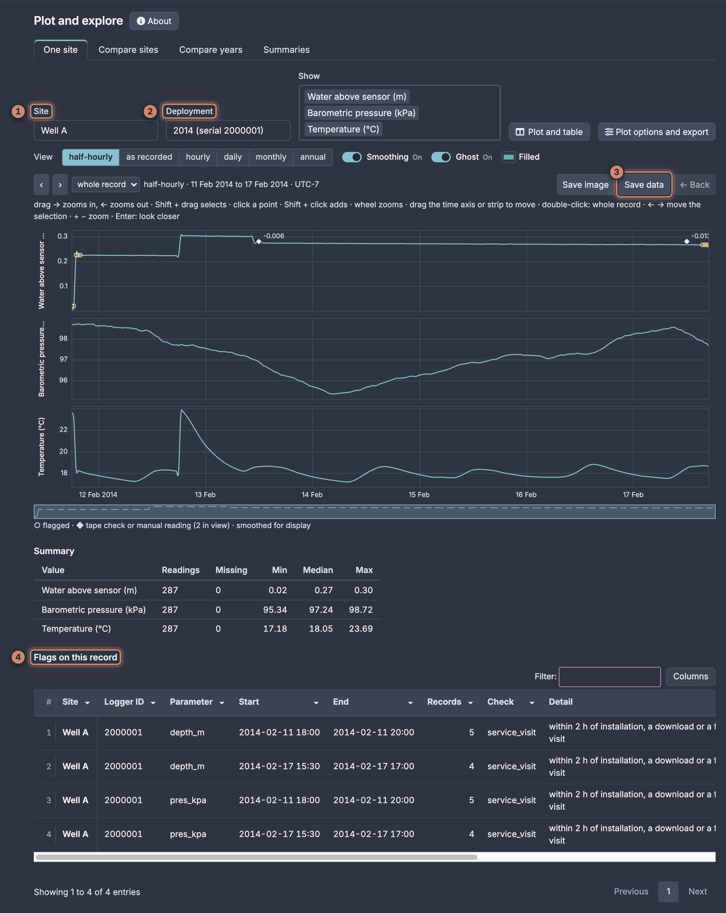
- Plot and explore (More): pick the Site 1 and Deployment 2, and the values to show.
- Drag left to right zooms in, right to left zooms out; Shift + drag selects a stretch (to remove it, use the Workbench, task 12); double-click shows the whole record. The line is smoothed for display (Smoothing in the plot options turns it off); Save data gives the readings themselves.
- Save image or Save data 3 saves what is in view.
- Flags on this record 4 lists every flag with its check and rule.
result Nothing changes in the project; the plot and the data saved are what is in view.
16Find out why a value was removed
when A value is missing from an export or a plot and you want to know why.
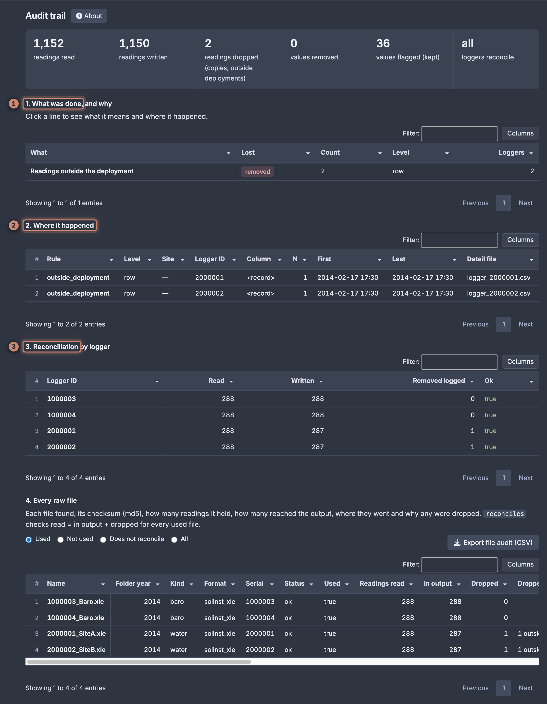
- Audit trail (More): read it top down: what was done and why 1, where it happened 2, then each logger's reconciliation 3 and every raw file.
- Click a line in 1 to see what it means and where it happened.
result Every reading read is either written or accounted for, logger by logger.
17Run the set-up check
when Before the first run, after changing the set-up, and before exporting.
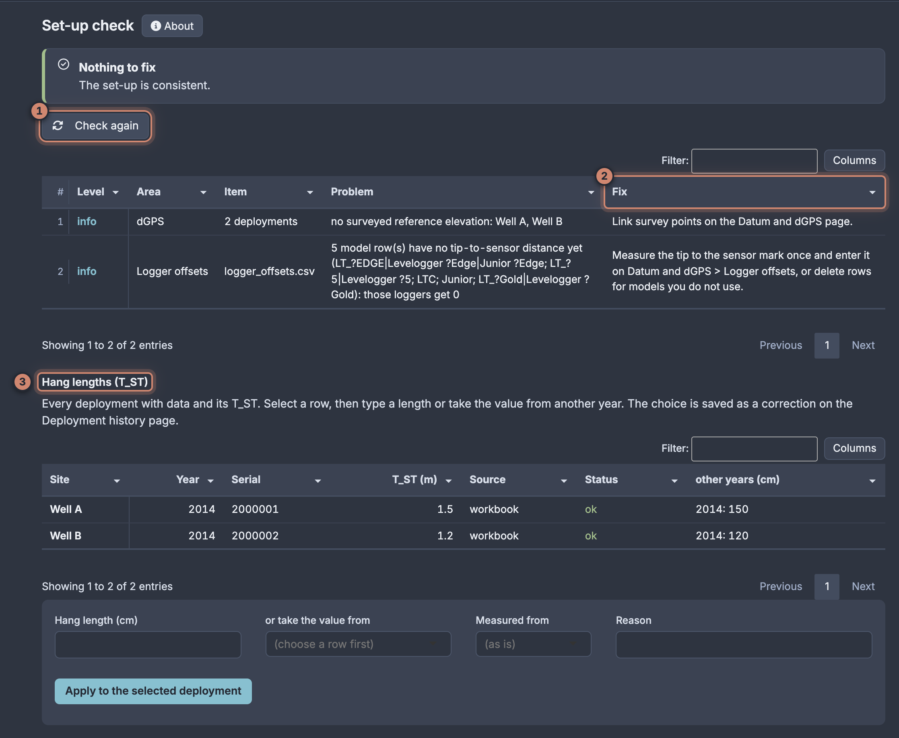
- Set-up check (More) lists what is missing or inconsistent in the set-up, each with a Fix 2. Fix what is red first.
- Check again 1 after a change.
- Hang lengths (T_ST) 3: every deployment with data and its hang length; select a row and type a length or take another year's value.
result Nothing changes until you follow a fix and run again.
18Export data and reports
when To send data to someone, archive it, or build reports.
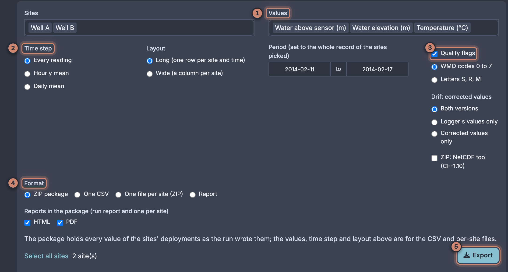
- 7 Report: pick the sites, the Values 1 and the Time step 2.
- Quality flags 3: WMO codes 0 to 7, or letters S, R, M. Drift-corrected values can be included beside the logger's own.
- Format 4: a ZIP package (NetCDF too if ticked), one CSV, one file per site, or the report alone. Reports in HTML, PDF or both.
- Export 5.
result The package holds every value of the sites' deployments as the run wrote them, the manual measurements beside the logger, the reports and a README with the processing level of each file; it can be used without the app. Fill in the Dataset card in Settings first: it is written into every NetCDF file.
19Back up or share the set-up
when To keep a copy of the set-up, or start another project with it.
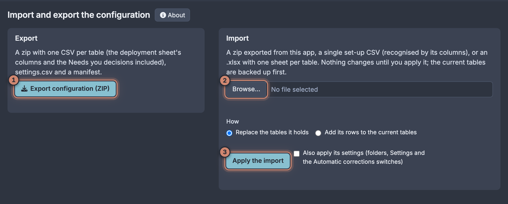
- Configuration (More): Export configuration (ZIP) 1 writes every set-up table, the deployment sheet, the Needs you decisions and the settings.
- In another project: Browse… for the zip 2, choose to replace the tables or add its rows, then Apply the import 3.
result The tables it replaces are kept in the project's history folder (config/history).
20Report a problem
when A page shows a notice with a reference, or something looks wrong.
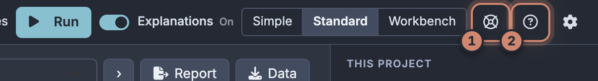
- A notice with a reference (E- and six characters) means part of a page failed; the app carries on.
- The lifebuoy button 1 builds a troubleshooting zip: versions, logs, problems and the set-up, no raw data. Send it with the reference.
- The ? button 2 opens the reference guide.
result The zip and the reference let a problem be traced without your raw data.
ovid WLR. For what WLR does to the data and why, see the WLR reference guide; every figure can be retaken with docs/guide_shots.R.